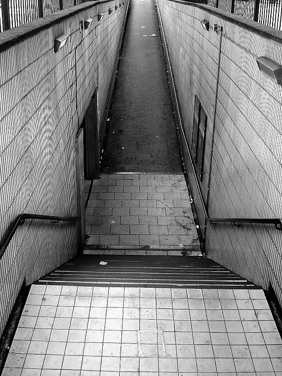

-

- Created by Transport for London
Going (1) 16
16
 3
3 -
- Event
- Paint a mural in Old St Roundabout subway
-
- Description
- We're sick of looking at this dirty wall on the way
out of Old St Station! We need some talented artists to
inspire Tech City with some beautiful artwork.
Graffiti artists welcome too!

This is what it looks like now! -
- Date
- Sometime in May
-
- Location
- Old Street Station